List adalah bagian teks di dalam dokumen yang berisi daftar item dari suatu kelompok atau grup tertentu.
Sebagai contoh, dalam situs web yang bertema kuliner, list dapat berupa daftar dari makanan dan minuman, beserta
harganya. List dapat juga berupa prosedur (urutan langkah-langkah) dari suatu pekerjaan tertentu, yang sifatnya
harus dilakukan secara berurutan dari langkah pertama sampai langkah terakhir. Contoh penggunaan list sebagai
berikut :
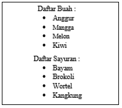
Dalam dokumen HTML, tipe daftar (list) dibedakan menjadi tiga, yaitu :
List berurutan (ordered list)
Daftar yang berurutan biasanya ditandai dengan penggunaan penomoran tertentu. Penomoran ini bias menggunakan
angka (1, 2, 3,…) maupun karakter alphabet terntentu (a, b, c,… atau i, ii, iii,…). Daftar yang berurutan
umumnya dipakai untuk item-item yang saling berhubungan satu sama lain, atau untuk menuliskan langkah-langkah
atau prosedur dari kegiatan terntentu yang tidak dapat dilakukan secara acak.
Untuk membuat suatu daftar yang berurutan dalam dokumen HTML, digunakan tag <ol> (ordered list),
yang berpasangan dengan tag </ol>. Tag <ol> digunakan untuk memulai suatu daftar berurutan tertentu,
sedangkan </ol> berfungsi untuk menandakan bahwa daftar tersebut sudah berakhir.
Masing-masing item di dalam daftar harus dibuat menggunakan tag <li> list item, yang kemudian perlu ditutup dengan tag </li>
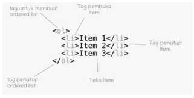
Contoh penulisan adalah sebagai berikut :
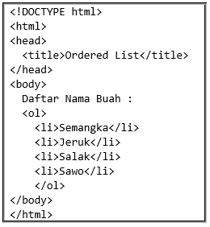
Hasilnya
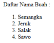
Adapun atribut untuk tag <ol> adalah “type” yang menunjukan jenis penomorannnya. Secara standart, tipenya adalah menggunakan penomoran
1, 2, 3, 4 dst. Selain tipe default, tipe lain yang dapat digunakan untuk keperluan penomoran dalam suatu list adalah :
| Tipe | Keterangan |
| A | Membuat list dengan penomoran berupa karakter A, B, C, dst |
| a | Membuat list dengan penomoran berupa karakter a, b, c, dst |
| I | Membuat list dengan penomoran berupa karakter I, II, III, dst |
| i | Membuat list dengan penomoran berupa karakter i, ii, iii, dst |
Contoh penggunaan atribut type :
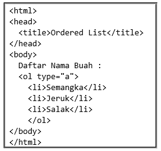
Hasilnya
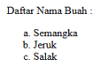
List tidak berututan (unordered list)
Daftar yang tidak berurutan adalah daftar yang item-itemnya dapat diubah posisinya secara acak. Dalam daftar ini,
tidak ada penomoran yang digunakan seperti pada daftar berurutan. Sebagai gantinya, item-item dalam daftar ini ditandai
dengan menggunakan tanda atau simbol tertentu, seperti gambar kotak atau bulat yang dikenal sebagai "bullet". Setiap item
dalam daftar tidak memiliki hubungan hierarkis atau urutan yang spesifik dengan item-item sebelumnya atau sesudahnya.
Daftar yang tidak berurutan memberikan kebebasan dalam pengaturan dan perubahan posisi item-itemnya tanpa mengikuti suatu
aturan penomoran tertentu.
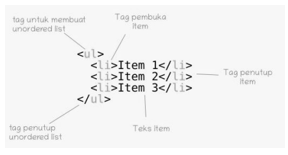
Contoh penulisan adalah sebagai berikut :
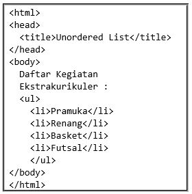
Hasilnya
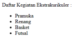
Adapun atribut untuk tag <ul> adalah “type” yang menunjukan jenis tanda untuk setiap item
berupa tanda bulatan untuk defaultnya.. Selain tipe default, tipe lain yang dapat digunakan untuk
keperluan unordered list adalah :
| Tipe | Keterangan |
| Disk | Membuat list dengan tanda bulatan hitam |
| Circle | Membuat list dengan tanda bulatan putih |
| Square | Membuat list dengan tanda kotak |
Contoh penggunaan atribut type :
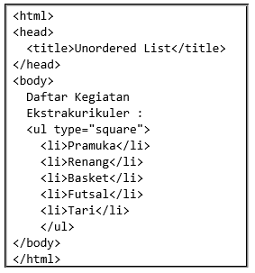
Hasilnya
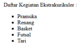
List definisi (definition list)
List definisi (definition list) digunakan untuk mengelompokkan istilah (kata kunci) dengan definisinya.
Daftar ini terdiri dari dua bagian: istilah yang didefinisikan dan definisi dari istilah tersebut. Dengan
list definisi, dapat dengan jelas menyajikan istilah beserta definisinya, sehingga membantu pemahaman
pengunjung terhadap konten halaman web. Untuk membuat daftar definisi, dapat menggunakan tiga tag HTML:
| Tag | Deskripsi |
| <dl> | Digunakan sebagai kontainer utama untuk daftar definisi |
| <dt> | Digunakan untuk menandai istilah yang akan didefinisikan |
| <dd> | Digunakan untuk menandai definisi dari istilah yang sebelumnya ditandai dengan <dt> |
Contoh :
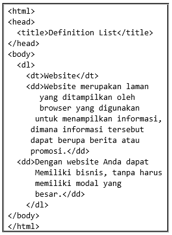
Hasilnya
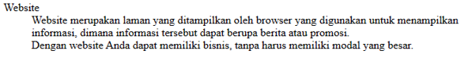
Video Latihan Praktikum
Video Latihan Praktikum